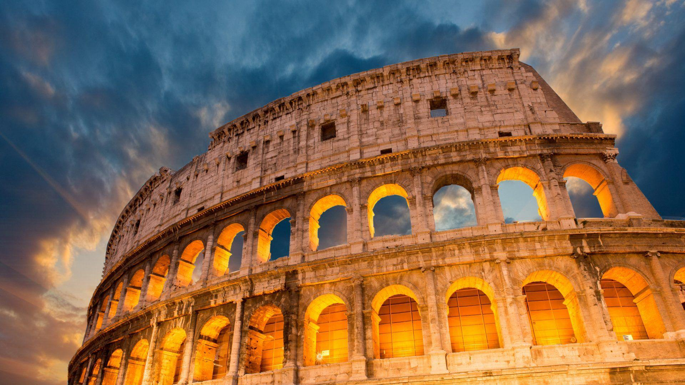

Benvenuti nella sezione dedicata ai monumenti più iconici d'Italia, un viaggio
attraverso i secoli di arte, cultura e architettura. Ogni edificio, statua e sito
archeologico racconta una storia unica, testimone delle grandi civiltà che hanno
plasmato il nostro Paese.
Da Roma a Venezia, da Firenze a Milano, esploreremo le origini, i segreti e le
curiosità dei monumenti che hanno reso l'Italia una culla di bellezza e
innovazione. Scopriremo il Colosseo, simbolo eterno della grandezza romana, il
Duomo di Milano, capolavoro del gotico, e la Torre di Pisa, con il suo
affascinante equilibrio imperfetto.
Grazie a immagini suggestive e dettagli storici, questa pagina ti guiderà alla
scoperta dei grandi tesori italiani, raccontando le vicende dei personaggi e
delle epoche che li hanno resi immortali.
Preparati a immergerti nella storia e a lasciarti sorprendere da tutto ciò che
i monumenti d'Italia hanno da raccontare!
Il Colosseo, noto anche come Anfiteatro Flavio, è uno dei monumenti più
iconici di Roma e dell'intera civiltà romana. Costruito tra il 70 e il
80 d.C. sotto gli imperatori Vespasiano e Tito, era destinato a
ospitare spettacoli pubblici come combattimenti tra gladiatori,
cacce di animali e rappresentazioni teatrali.
Descrizione
Il Colosseo è un enorme anfiteatro ellittico con una capacità stimata tra 50.000 e 87.000
spettatori. La sua struttura è composta da quattro livelli di arcate, con un sofisticato sistema
di
accessi che permetteva un rapido afflusso e deflusso del pubblico. L'arena centrale era
circondata
da un complesso sotterraneo di corridoi e stanze, utilizzati per ospitare gladiatori e animali
prima
degli spettacoli.
Storia
Dopo la caduta dell'Impero Romano, il Colosseo subì danni a causa di terremoti e saccheggi. Nel
Medioevo fu utilizzato come fortezza e, successivamente, come cava di materiali per altre
costruzioni. Solo nel XIX secolo iniziarono i primi restauri per preservarlo.
Oggi il Colosseo è uno dei siti archeologici più visitati al mondo e fa parte del Patrimonio
dell'Umanità UNESCO. Nel 2007 è stato incluso tra le Nuove Sette Meraviglie del Mondo.

Situato nel cuore di Milano, il Duomo è una delle cattedrali gotiche più imponenti d'Europa. La sua
struttura maestosa e la famosa Madonnina dorata che svetta sulla guglia più alta lo rendono un
simbolo della città.
Descrizione
L'edificio presenta cinque navate con alti pilastri e vetrate istoriate che illuminano l'interno. La
sua struttura in marmo di Candoglia è decorata con oltre 3.400 statue, inclusi gargoyle e figure
sacre. Dall'alto della terrazza panoramica, è possibile godere di una vista spettacolare su Milano.
Storia
La costruzione iniziò nel 1386 sotto Gian Galeazzo Visconti, coinvolgendo numerosi architetti e
artisti nel corso dei secoli. La facciata, completata solo nel XX secolo, è il risultato di un lungo
processo di restauro e ampliamento. Ancora oggi, la Veneranda Fabbrica del Duomo si occupa della sua
manutenzione.
Il Duomo di Firenze, ufficialmente chiamato Cattedrale di Santa Maria del Fiore, è uno dei
capolavori dell'architettura gotica e rinascimentale italiana. Situato nel cuore di Firenze, è
famoso per la sua imponente cupola progettata da Filippo Brunelleschi, che è ancora oggi la più
grande cupola in muratura mai costruita.
Descrizione
Facciata: Realizzata in marmo bianco di Carrara, verde di Prato e rosso di Siena, la facciata
attuale è di epoca moderna, completata nel 1887 da Emilio De Fabris.
Cupola: Ha un diametro di 45 metri e un'altezza interna di 100 metri. È decorata con affreschi di
Giorgio Vasari e Federico Zuccari, che coprono una superficie di 3600 m².
Campanile di Giotto: Alto 85 metri, fu progettato da Giotto nel 1334 e completato da Andrea Pisano e
Francesco Talenti.
Storia
La costruzione del Duomo iniziò nel 1296 sotto la direzione di Arnolfo di Cambio, ma subì diverse
interruzioni e riprese nel corso dei secoli. Nel 1412, la cattedrale fu dedicata a Santa Maria del
Fiore, in riferimento al giglio, simbolo di Firenze. La cupola fu completata nel 1436 da
Brunelleschi, un'opera rivoluzionaria che sfidò le tecniche costruttive dell'epoca.
Oggi il Duomo è uno dei monumenti più visitati d'Italia e rappresenta un simbolo della grandezza
artistica e culturale di Firenze.
La Torre di Pisa è uno dei monumenti più iconici d'Italia, famosa per la sua caratteristica
inclinazione. Situata nella Piazza del Duomo, è il campanile della Cattedrale di Santa Maria Assunta
e rappresenta un simbolo della città e dell'architettura medievale.
Descrizione
Alta 57 metri, la Torre di Pisa è composta da sei piani di loggette con colonne in marmo
bianco. La sua inclinazione attuale è di 3,97° rispetto all'asse verticale, dovuta al cedimento del
terreno sottostante. Il suo interno ospita una scala a chiocciola che conduce alla cima, da cui si
può godere di una vista panoramica sulla città.
Storia
La costruzione iniziò nel 1173, ma già durante i primi anni il terreno instabile causò un cedimento,
dando origine alla sua inclinazione. I lavori furono interrotti più volte e ripresero nel 1275 sotto
la guida di Giovanni di Simone e Giovanni Pisano, che cercarono di correggere la pendenza. La torre
fu completata nel 1372 con l'aggiunta della cella campanaria.
Il Palazzo Ducale è uno dei simboli di Venezia e un capolavoro dell'architettura gotica veneziana.
Situato in Piazza San Marco, è stato per secoli il centro del potere politico della Serenissima
Repubblica di Venezia.
Descrizione
Il palazzo è caratterizzato da una struttura elegante e imponente, con un porticato gotico al piano
terra e una serie di logge traforate che sorreggono la massiccia mole superiore. Al suo interno si
trovano sale decorate con opere di Tintoretto, Veronese e Tiziano, tra cui la Sala del Maggior
Consiglio, una delle più grandi d'Europa. Il Palazzo è collegato alle Prigioni Nuove tramite il
celebre Ponte dei Sospiri.
Storia
Le sue origini risalgono al IX secolo, quando il doge Angelo Partecipazio trasferì la sede del
governo a Rivoalto. Nel corso dei secoli, il palazzo subì numerosi incendi e ricostruzioni,
assumendo la forma attuale tra il XIV e il XVI secolo. Fu la residenza del doge e ospitò le
magistrature veneziane fino alla caduta della Repubblica nel 1797.